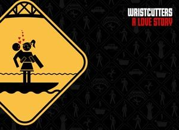

Wristcutters

A Love Story is the directorial debut of Croatian Goran Dukic, who developed the script at the Sundance Screenwriters Lab in 2004, based on a short story by Israeli writer/actor Etgar Keret titled "Aos Happy Campers". Dukic studied cinema in Zagreb and later at the American Film Institute, specializing in shorts. One of them, Mirta uci statistiku (1991), was critically well received, heralded as one of the best Croatian films. Dealing with the controversial subject of suicide, Wristcutters, after being a nominee at Sundance 2006 for the Grand Jury Award, won the best feature award in the Gen Art Film Festival and nominations for best first feature and best script in the Independent Spirit Awards, 2007.
Review:
http://www.cinematical.com/2006/01/26/sundance-review-wristcutters-a-love-story/
Official Site:
http://www.wristcutters.com